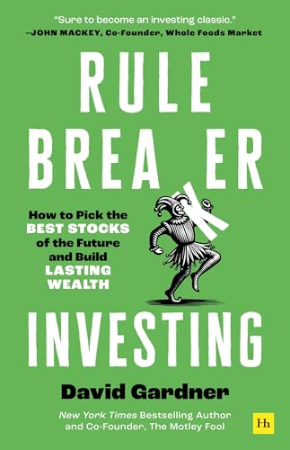

大卫·加德纳（David Gardner）与弟弟汤姆·加德纳（Tom Gardner）于1993年创立了投资媒体与选股服务公司“傻瓜投资”（The Motley Fool），大卫在其中的头衔是“首席规则破坏者”（Chief Rule Breaker）。三十多年来，他通过一系列看似离经叛道的选股，为全球数百万普通投资者带来了跑赢大盘的回报，并主持着长期播客《Rule Breaker Investing》。《规则破坏者投资法》于2025年9月由 Harriman House 出版，共256页、十八章，被视为他对股票投资的系统性总结——把三十年间反复验证的思考方式，第一次完整地写成一本可供普通人操作的手册。
这本书的立场，是对传统投资箴言的正面挑战。加德纳认为，“低买高卖”“只买被低估的股票”“赢家涨上去就该获利了结、再平衡”这些被反复念诵的老规则，往往是错的。他给出的替代方案是“买高，然后尽量不要卖”（Buy high and try not to sell）——真正卓越的公司几乎总是以溢价交易，理想的做法是尽可能长久地持有它们，并在赢家继续证明自己时不断加仓，而不是急于兑现。书的核心，是识别那些在重要新兴行业里颠覆现状、领跑赛道的“规则破坏者”公司，并在它们尚未被大众看清之前买入。加德纳过往的选股清单里，包括亚马逊、星巴克、英伟达、奈飞、Booking Holdings、MercadoLibre 和特斯拉等公司，其中有些让投资者赚到了上百倍的回报；封面上更点明作者是一位“挑中过七只百倍股”的投资者。全书用十八章分别讲述如何培养投资习惯、如何识别有潜力的股票、以及如何构建有目标感的投资组合。
这本书出版后获得了不少同行与作家的推荐。《金钱心理学》作者摩根·豪泽尔（Morgan Housel）写道：“很少有人像大卫·加德纳这样，帮助个人投资者理解通过长期持有优秀公司来投资这件事。这本书展现了他在过去三十年里如何为自己赢得声誉：读来令人愉悦，通俗易懂，且充满智慧。”全食超市（Whole Foods Market）联合创始人约翰·麦基（John Mackey）在封面上评价它“必将成为一本投资经典”。畅销书作家丹尼尔·平克（Daniel Pink）则指出，本书“远不止于投资——它就领导力、文化、心态、目标与决策提供了深刻的洞见，这些洞见在商业与人生中同样适用”。
对关注商业、投资与长期思考的读者而言，《规则破坏者投资法》提供的并不是一套追涨杀跌的短线技巧，而是一种与主流直觉相反的持有哲学：把注意力从“价格是否便宜”转向“这家公司是否在改写行业规则”，把持有周期从数月拉长到数年乃至数十年，并学会在不确定中与自己最好的赢家长期为伴。它延续了加德纳在1998年与弟弟合著的《傻瓜投资之规则破坏者、规则制定者》中提出的思路，又把三十年的实践浓缩为更成熟的方法论，适合作为成长股投资者理解“长期持有卓越公司”这一命题的入门读物。